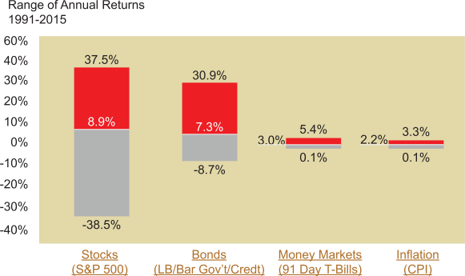

Almost every investor will have some understanding of market risk and will likely define it as the "chance that I will lose money." For purposes of this course, we will refer to "volatility" risk. While inflation can deflate the value of the dollar substantially, the fluctuating rates of return that constitute market risk will also affect investment returns.
As shown in the chart below, market risk can be observed by considering the fluctuating annual rates of return for stocks, bonds, and money market securities that occurred during the past 25 years. The chart shows the maximum and minimum returns that were realized in any single calendar year, as well as the average annual return for the entire 25 years. Clearly, the potential risk associated with any given year is substantial; but the market risk is not the same for all asset classes, as some asset classes experience greater volatility than do others.
Click each bar graph title for an explanation of the returns of each Asset Class.
